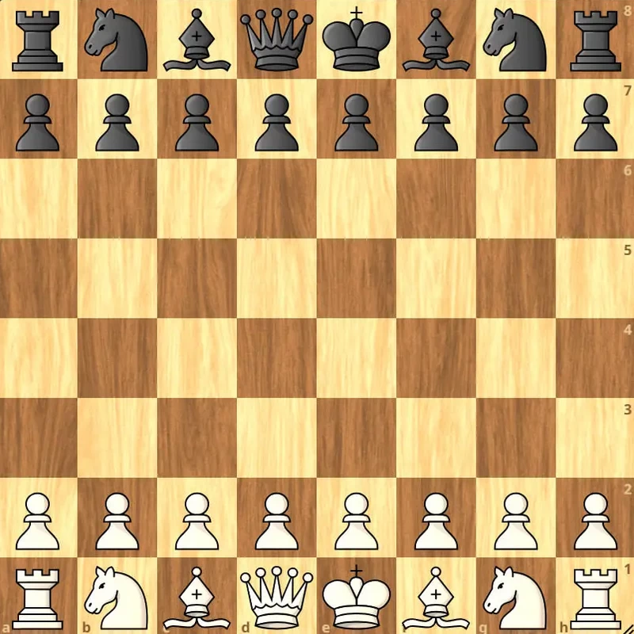
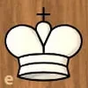
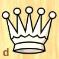
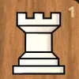

Правила в шахах
Меню
Мета гри
Головна мета — поставити мат королю суперника.
Це ситуація, коли король перебуває під нападом (шахом) і не має жодного способу його уникнути: не може відійти на безпечну клітинку,
не може закритися іншою фігурою, не може побити фігуру, що напала.
Дошка
Сітка 8х8, білий та чорний кути чергуються. Горизонталь підписана латиницею: a-h, вертикаль - числами: 1-8.
Початкове розташування фігур на дошці
Варто враховувати, що це розташування для стандартної гри в шахи.
- Для білих:
- тури розташовані на краях 1 горизонталі (a1, h1),
- коні після тур (b1, g1), наступні - слони (c1, f1),
- ферзь на клітинці свого кольору (білий - біла клітинка d1),
- король на e1,
- пішаки повністю закривають другу горизонталь.
- Для чорних усе дзеркально:
- тури розташовані на краях 8 горизонталі (a8, h8),
- коні після тур (b8, g8), наступні - слони (c8, f8),
- ферзь на клітинці свого кольору (чорний - чорна клітинка d8),
- король на e8,
- пішаки повністю закривають сьому горизонталь.

Як ходять фігури
Кожна фігура має свій унікальний спосіб руху.
- Пішак: Ходить тільки вперед на 1 клітинку (або на 2 при першому ході). Б'є фігури суперника по діагоналі.
- Кінь: Ходить буквою «Г» (дві клітинки по вертикалі або горизонталі+клітинка вбік).
Це єдина фігура, що може перестрибувати через інші.
- Слон: Пересувається на будь-яку відстань по діагоналях кольору своєї клітинки.
- Тура: Рухається на будь-яку відстань по вертикалі або горизонталі.
- Ферзь: Найсильніша фігура. Поєднує можливості тури та слона.
- Король: Найважливіша фігура. Ходить на 1 клітинку в будь-якому напрямку.
Найцінніші фігури
| Король | Ферзь | Тура |
|---|
 |  |  |
Ходи | Ходи | Ходи |
| Безцінний | 9 | 5 |
Особливі ходи
- Рокіровка: Одночасний хід королем і турою. Дозволяє заховати короля в безпечне місце і вивести туру в центр. Можлива лише якщо фігури ще не ходили та якщо на цей момент клітинки через які "йтиме" король не атаковані.
- Взяття на проході: Якщо пішак суперника стрибнув через клітинку, яка була під боєм вашого пішака, ви можете збити його так, ніби він зробив хід лише на одну клітинку.
- Перетворення: Якщо ваш пішак дійшов до кінця дошки, він перетворюється на одну з наступних фігур (можна вибрати на яку саме): ферзь, тура, слон, кінь.
Шаховий етикет: Кодекс честі
- Правило «Взявся — ходи». Актуальне для очних шахів (в онлайн партіях це правило зазвичай не реалізоване)
Якщо Ви торкнулися своєї фігури — Ви зобов'язані нею піти (якщо є хоча б один легальний хід).
Якщо торкнулися фігури суперника — Ви зобов'язані її збити.
Якщо ж фігура стоїть нерівно і Ви хочете її поправити, спочатку скажіть: «Поправляю».
- Повага до суперника. Важливо пам'ятати, що грає з Вами не ворог, а суперник, тож як і в будь-якому іншому спорті або грі необхідно поважати суперника.
Початок та кінець: перед партією заведено тиснути руку супернику, після закінчення — також, незалежно від результату.
Не можна відволікати суперника та не можна заважати йому думати.
- Чесна гра. Ні чітерству: Використання телефонів або підказок сторонніх людей під час гри — це найгірше порушення,
яке веде до негайної дискваліфікації та втрати репутації.